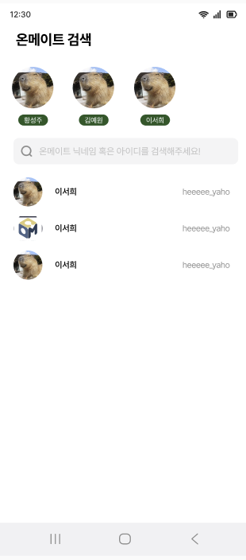

Bookie OnNon
읽은 책을 기록하는 데서 그치지 않고, 같은 챕터를 읽은 사람들과 생각을 나누고 취향이 맞는 사람을 찾을 수 있도록 만든 독서 기록·커뮤니케이션 서비스입니다.
사용 기술
구체적인 기술 스택은 아직 채워지지 않았습니다 — 알려주시면 선택 이유와 함께 정리해서 넣겠습니다.
주요 기능
- 독서 기록 — 읽고 있는 책을 등록하고 현재 읽은 페이지, 감상평을 기록
- 챕터별 토론 — 챕터마다 주어지는 주제로 다른 독자들과 생각을 나누고, 댓글·대댓글로 이야기를 이어감
- 온메이트 — 닉네임·아이디로 취향이 맞는 사용자를 찾아 연결되는 독서 메이트 기능

트러블슈팅
트러블슈팅 내용은 아직 채워지지 않았습니다 — 겪었던 문제와 해결 과정을 알려주시면 STAR 형식으로 정리해서 넣겠습니다.